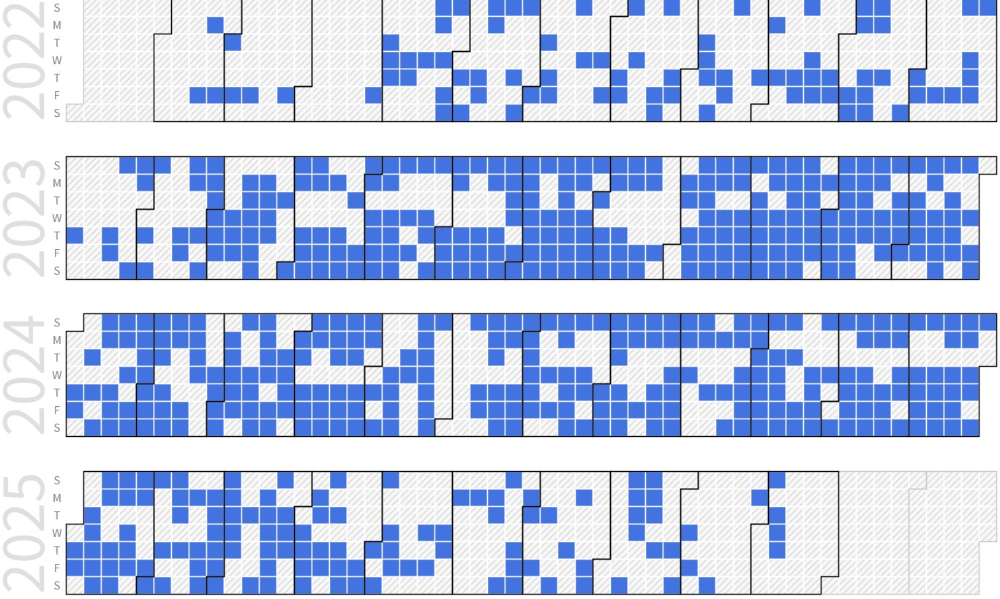

Seunghyun Park (Integrated Ph.D. Student)
Ph.D Candidate, AI Processor Accelerator |
Repository Commit History
|  |
Introduction
Brief Introduction
A holistic AI accelerator designer from low-level to high-level
Full Bio Sketch
Mr. Park received his B.S. degree in Electronics Engineering at Kyungpook National University, Daegu, Republic of Korea in 2023. He is currently an integrated Ph.D. student in School of Electronic and Electrical Engineering at Kyungpook National University, Daegu, Republic of Korea. His research interests include artificial intelligence (AI) accelerator design. He conducts research about low-power, small-area, high-speed accelerator architecture and design/verification methodology. Currently, he is developing a structure that allows AI operations to perform with high efficiency but low power on edge-devices like MCU, utilizing techniques such as tiling and improved off-chip communication.
His previous research primarily focused on studies related to DSP (Digital Signal Processing). In particular, he concentrated on research about acoustic signals, covering areas like active noise cancellation and 3D audio. Notably, he addressed the shortcomings of existing noise-canceling algorithms by utilizing artificial intelligence models for real-time noise processing and designed accelerators for binaural reproduction, resulting in the publication of several papers. He received excellent research grant (25,000,000 Won Scholarship) from National Research Foundation (NRF) in 2025.
Research Topic
CNN Acceleration for LiDAR Signal Processing Systems
 In field of artificial intelligence, Image is commonly expressed by matrix. Hardware process input matrix through filter(kernel) then output the matrix processed image. And images consist of three colors, R, G, B. So images are 3-dimentional tensor where convolutional neural networks process. For efficient image processing convolutional neural network acceleration processor are needed. To design convolution processor this research uses Verilog RTL simulation. Accelerating means processor could run immediately when data is come. So, in this research puts effort on control logic which calculates memory address. Starting with assembly language code for matrix multiplier, calculating memory address can be automated. With methods like automation memory address calculation and loop unrolling, we can achieve the goal which is high-performance processor implementation. Also, minimize the Les (Logic Elements) low-power, small-size design can be implemented. One of the minimalization method is MAC (Multiply And Accumulate). MAC is powerful because in one instruction multiply and add calculation is immediately performed by combinational logic circuit. MAC processor calculates better than non-MAC processor with about 60% reduced time.
In field of artificial intelligence, Image is commonly expressed by matrix. Hardware process input matrix through filter(kernel) then output the matrix processed image. And images consist of three colors, R, G, B. So images are 3-dimentional tensor where convolutional neural networks process. For efficient image processing convolutional neural network acceleration processor are needed. To design convolution processor this research uses Verilog RTL simulation. Accelerating means processor could run immediately when data is come. So, in this research puts effort on control logic which calculates memory address. Starting with assembly language code for matrix multiplier, calculating memory address can be automated. With methods like automation memory address calculation and loop unrolling, we can achieve the goal which is high-performance processor implementation. Also, minimize the Les (Logic Elements) low-power, small-size design can be implemented. One of the minimalization method is MAC (Multiply And Accumulate). MAC is powerful because in one instruction multiply and add calculation is immediately performed by combinational logic circuit. MAC processor calculates better than non-MAC processor with about 60% reduced time.
CNN Accelerator for Noise Canceller
 Convolutional neural networks (CNNs) are prevalent in image processing systems. However, there are not sufficient studies on acoustic systems. The primary research focuses on the acoustic system, a low-power hardware implementation of noise cancellation. However, conventional adaptive noise cancellation suffers slow convergence. Furthermore, existing CNNs have a bottleneck in memory and power. In the present work, we propose efficient acoustic noise cancellation architecture to accelerate processing speed and reduce power consumption. Our proposed architecture has an efficient data transfer technique using even-odd buffer and low-power CNNs noise cancellation algorithms. With our proposed architecture, the simulation result shows that the overall processing time was reduced by 20.3% and the power consumption was reduced by 6.1%compared to the single buffer
Convolutional neural networks (CNNs) are prevalent in image processing systems. However, there are not sufficient studies on acoustic systems. The primary research focuses on the acoustic system, a low-power hardware implementation of noise cancellation. However, conventional adaptive noise cancellation suffers slow convergence. Furthermore, existing CNNs have a bottleneck in memory and power. In the present work, we propose efficient acoustic noise cancellation architecture to accelerate processing speed and reduce power consumption. Our proposed architecture has an efficient data transfer technique using even-odd buffer and low-power CNNs noise cancellation algorithms. With our proposed architecture, the simulation result shows that the overall processing time was reduced by 20.3% and the power consumption was reduced by 6.1%compared to the single buffer
Tile-Connected AI Computation Optimization
 Designing systems that transcend specific applications like ANC and can be applied to more general accelerator architectures is currently one of the most important topics in the chip design field. Due to resource constraints in artificial intelligence operations or high-performance computing, performance often becomes bound by I/O bandwidth or computing elements. Therefore, there is a proposal for structures that can be implemented at a low cost, not just by widening bandwidth or increasing the number of processing elements. Research is underway to create a more efficient data control path with a structure that is low-power but does not compromise on performance or accuracy using the Radix-4 Booth algorithm in a Bit-separable manner, or through a tightly coupled software/hardware structure for off-chip communication
Designing systems that transcend specific applications like ANC and can be applied to more general accelerator architectures is currently one of the most important topics in the chip design field. Due to resource constraints in artificial intelligence operations or high-performance computing, performance often becomes bound by I/O bandwidth or computing elements. Therefore, there is a proposal for structures that can be implemented at a low cost, not just by widening bandwidth or increasing the number of processing elements. Research is underway to create a more efficient data control path with a structure that is low-power but does not compromise on performance or accuracy using the Radix-4 Booth algorithm in a Bit-separable manner, or through a tightly coupled software/hardware structure for off-chip communication
Bit-Separable Multipliers and Dynmic Range Decoder in CNN Accelerators
 The integration of AI into modern devices demands advancements in hardware to achieve high computational power and low latency. One of the most promising solutions to these challenges is the implementation of bit-separable radix-4 Booth multipliers (BSM) combined with dynamic range decoding (DRD) in CNN accelerators. This research focuses on developing and optimizing these technologies to enhance the performance and energy efficiency of AI applications. By structurally dividing the multiplier and selectively processing only the necessary bits, the BSM significantly improves computational speed and power efficiency. The innovative use of DRD allows for skipping redundant computations, thus maximizing the use of available memory bandwidth and hardware resources. Experiments with various CNN architectures, including MobileNet, have shown notable improvements, such as a 29% increase in processing speed and a 28% reduction in power consumption. This research demonstrates how hardware innovations can lead to substantial software performance enhancements, enabling efficient computation within existing AI frameworks. Our study delves into the detailed design and practical implementation of BSM and DRD within CNN basic blocks, showcasing their seamless integration and effectiveness across different AI models. The consistent pattern of zero activation in ReLU layers contributes significantly to power savings, making this approach particularly effective for edge devices with limited resources. Future research directions include optimizing BSM integration in sequential models and exploring variable DRD techniques to further enhance performance.
The integration of AI into modern devices demands advancements in hardware to achieve high computational power and low latency. One of the most promising solutions to these challenges is the implementation of bit-separable radix-4 Booth multipliers (BSM) combined with dynamic range decoding (DRD) in CNN accelerators. This research focuses on developing and optimizing these technologies to enhance the performance and energy efficiency of AI applications. By structurally dividing the multiplier and selectively processing only the necessary bits, the BSM significantly improves computational speed and power efficiency. The innovative use of DRD allows for skipping redundant computations, thus maximizing the use of available memory bandwidth and hardware resources. Experiments with various CNN architectures, including MobileNet, have shown notable improvements, such as a 29% increase in processing speed and a 28% reduction in power consumption. This research demonstrates how hardware innovations can lead to substantial software performance enhancements, enabling efficient computation within existing AI frameworks. Our study delves into the detailed design and practical implementation of BSM and DRD within CNN basic blocks, showcasing their seamless integration and effectiveness across different AI models. The consistent pattern of zero activation in ReLU layers contributes significantly to power savings, making this approach particularly effective for edge devices with limited resources. Future research directions include optimizing BSM integration in sequential models and exploring variable DRD techniques to further enhance performance.
Lightweight System for Chinese-English Simultaneous Interpretation on Edge Devices
 Simultaneous interpretation plays a crucial role in enabling real-time communication across languages. However, existing cloud-based systems suffer from significant latency, high computational complexity due to intermediate text conversion, and poor accuracy in noisy environments. To address these limitations, this work proposes a lightweight hardware-software integrated system that performs Chinese-to-English simultaneous interpretation directly on edge devices.
Simultaneous interpretation plays a crucial role in enabling real-time communication across languages. However, existing cloud-based systems suffer from significant latency, high computational complexity due to intermediate text conversion, and poor accuracy in noisy environments. To address these limitations, this work proposes a lightweight hardware-software integrated system that performs Chinese-to-English simultaneous interpretation directly on edge devices.
The proposed approach introduces an efficient preprocessing pipeline embedded within an earphone to extract tonal and syllabic features specific to Mandarin speech. By accelerating these operations in hardware, latency is minimized and communication overhead is reduced. On top of this, a specialized speech-to-speech translation (S2ST) model is developed, combining convolutional layers for local feature extraction and attention mechanisms for contextual understanding. A memory structure based on the “Surprise” mechanism allows the model to retain tonal and contextual information, ensuring more natural and consistent translations.
To further optimize performance on constrained devices, the system integrates sparsity-aware computation with bit-separable multipliers, reducing redundant operations and power consumption. Simulation and prototype results show that the architecture achieves real-time processing with low energy cost, while maintaining translation quality. Ultimately, this research demonstrates the feasibility of deploying practical, low-latency simultaneous interpretation systems on wearable devices, bridging the gap between human communication and AI-powered interaction.
Exploiting Output Activation Sparsity with Bit-Separable Multiplier in CNN Accelerators
 This research presents a CNN accelerator architecture that introduces a bit-separable multiplier (BSM) to exploit output activation sparsity for enhanced computational efficiency. Unlike conventional multipliers, BSM predicts activation outcomes by analyzing upper bits of operands, enabling unnecessary lower-bit computations to be skipped. This selective computation reduces memory access, switching activity, and power consumption while preserving inference accuracy.
This research presents a CNN accelerator architecture that introduces a bit-separable multiplier (BSM) to exploit output activation sparsity for enhanced computational efficiency. Unlike conventional multipliers, BSM predicts activation outcomes by analyzing upper bits of operands, enabling unnecessary lower-bit computations to be skipped. This selective computation reduces memory access, switching activity, and power consumption while preserving inference accuracy.
The accelerator integrates a dynamic range decoder (DRD) that identifies zero activation cases before the ReLU operation, allowing the system to bypass redundant operations. In addition, the modular sign extension (MSE) unit ensures efficient handling of partial products without irregular logic overhead. Together, these components make the design highly compatible with convolutional layers and activation functions such as ReLU and ReLU6, further extending sparsity-aware optimization.
Experimental results demonstrate that the proposed architecture, fabricated in a 130nm CMOS process, achieves a 53% reduction in area, 26% shorter delay, and 53% lower power consumption compared to a conventional radix-4 Booth multiplier. At the system level, tests across various CNN models on CIFAR-10 reveal significant efficiency gains: MobileNet achieved a 26% speedup and 28% power reduction with less than 0.15% accuracy degradation. The approach also shows scalability for larger models like ResNet, highlighting its adaptability across network sizes and tasks.
In conclusion, the BSM-based accelerator leverages output activation sparsity to deliver lightweight, low-power CNN acceleration without compromising model accuracy. Its efficient design and hardware simplicity make it highly suitable for deployment in edge AI applications where energy and area constraints are critical.
Inducing Activation Sparsity in Transformer Architectures
 This study investigates methods to actively induce output activation sparsity in Transformer models, with particular emphasis on modifying the attention mechanism. Traditional self-attention employs the softmax function, which assigns nonzero weights to all elements, leading to dense activations, high computational costs, and reduced interpretability. To overcome this, two alternatives are explored: sparsemax and ReLU with scaling.
This study investigates methods to actively induce output activation sparsity in Transformer models, with particular emphasis on modifying the attention mechanism. Traditional self-attention employs the softmax function, which assigns nonzero weights to all elements, leading to dense activations, high computational costs, and reduced interpretability. To overcome this, two alternatives are explored: sparsemax and ReLU with scaling.
Sparsemax introduces linear normalization that explicitly drives many attention scores to zero, thereby generating selective focus and interpretable attention maps. Although it requires sorting and threshold operations, a bitonic sort-based hardware design demonstrates that the function can be efficiently implemented in parallel pipelines. In contrast, ReLU provides a simpler mechanism, outputting only positive attention scores and discarding the rest. To stabilize training and reduce variance, a scaling factor is applied and optimized for hardware using bit-shift operations, avoiding costly multiplications. Experimental results show that both methods significantly increase sparsity in attention distributions: over 80% of attention outputs become zero, compared to just 33% with softmax. This sparsity directly reduces the number of effective multiplications, leading to faster inference (up to 35% speedup), lower memory usage (up to 30% reduction), and meaningful power savings (up to 26%). Moreover, sparsemax achieves the best balance between efficiency and translation performance, maintaining competitive BLEU scores while enhancing interpretability.
By structurally inducing activation sparsity at the attention layer, this work demonstrates a practical approach to designing more efficient and interpretable Transformer models. The proposed methods open new directions for hardware-friendly deployment of large-scale models in constrained or real-time environments.
Workload-Aware Automated Compressor Tree Design for Efficient Deep Learning Accelerators
 The multiply-and-accumulate (MAC) operation is the dominant computational primitive in deep learning, with addition circuits inside the MAC?implemented as compressor trees?accounting for more than 70% of transistor usage. As model dimensions scale to 1024 and beyond, this overhead rises above 90%, making compressor tree design a critical target for optimization. Yet, compressors exhibit irregular structures and diverse architectures, complicating manual design and limiting workload-specific tuning.
The multiply-and-accumulate (MAC) operation is the dominant computational primitive in deep learning, with addition circuits inside the MAC?implemented as compressor trees?accounting for more than 70% of transistor usage. As model dimensions scale to 1024 and beyond, this overhead rises above 90%, making compressor tree design a critical target for optimization. Yet, compressors exhibit irregular structures and diverse architectures, complicating manual design and limiting workload-specific tuning.
This work introduces an automated compressor tree design framework that systematically constructs and optimizes compressor hierarchies for neural processing units (NPUs). The framework analyzes workload characteristics?such as tensor dimensions, accumulation depth, and bit-widths?and integrates both exact and approximate compressors. By injecting noise during MAC accumulation, the method quantifies model-specific error tolerance, revealing that CNNs degrade rapidly with arithmetic noise, while Transformer models (especially in translation) exhibit significant robustness, even showing accuracy plateaus or minor improvements under moderate approximation.
Guided by this analysis, the framework applies a stage- and column-aware partitioning strategy, assigning exact compressors to high-significance bits while substituting approximate compressors in low-impact regions. A combination of reduction and residual algorithms ensures systematic tree synthesis, while a metaheuristic optimization loop explores design trade-offs across area, delay, and power.
Evaluations show that the approach effectively balances efficiency and accuracy. For CNNs, conservative approximation is necessary, but for Transformer workloads, aggressive approximation yields substantial gains with negligible accuracy loss. The automated flow reduces design complexity, optimizes compressor tree structures under hardware constraints, and demonstrates that workload-aware accumulation is a key lever for low-power, high-performance AI accelerators.
Chip Design
Tile-based CNN Accelerator (2023-05-01)
 IEEE COOL Chips 2024, Power-Efficient CNN Accelerator Design with Bit-Separable Radix-4 Booth Multiplier
IEEE COOL Chips 2024, Power-Efficient CNN Accelerator Design with Bit-Separable Radix-4 Booth Multiplier
Commercial MCU design
DMA module design for Off-chip Interface
GCC compile environment setup for SW execution
Stimulus generator in C code
Custom UART driver
SPI PHY design and verification
Custom radix-4 Booth multiplier design
AXI-4 based FIFO and on-chip bus design
Linker script adjustment for CNN data alignment
PCB design with various IO peripherals
Full Custom Bit-Separable Radix-4 Booth Multiplier
 IEIE 2024, Design of Bit-Separable Radix-4 Booth Multiplier
IEIE 2024, Design of Bit-Separable Radix-4 Booth Multiplier
Full custom multiplier design with bit-separable mechanism
Experience with full custom design tools; Cadence Virtuoso, Synopsys Custom Compiler, Laker
Power consumption simulation with Synopsys PrimePower
Various primitive cell design (NAND, NOR, FF, INV, MUX…)
Full Custom SRAM PIM for Edge CNN Training

SRAM Cell design (using thin cell) from scratch
Spice simulation using digital vector file format
Standard cell design flow
500nm fabrication process, maximum 75MHz clock speed
Publications
Journal Publications (KCI 2, SCI 5)
Seunghyun Park and Daejin Park. Lightweighted FPGA Implementation of Symmetric Buffer-based Active Noise Canceller with On-Chip Convoluation Acceleration Units (KCI) Journal of the Korea Institute of Information and Communication Engineering, 2022.
Seunghyun Park and Daejin Park. Low-Power FPGA Realization of Lightweight Active Noise Cancellation with CNN Noise Classification (SCI) Electronics, 12(11):2511-2526, 2023.
Seunghyun Park and Daejin Park. Low-Power Scalable TSPI: A Modular Off-Chip Network for Edge AI Accelerators (SCI) IEEE Access, 2024. Seunghyun Park and Daejin Park. Optimization of Output Activation Sparsity in AI AcceleratorUsing Bit-Separable Multiplier (KCI) IEMEK Journal of Embedded Systems and Applications, 20(1):1-8, 2025.
Seunghyun Park and Daejin Park. Bit-Separable Multiplier in CNN Accelerator: Analyzing Partial Results for Post-Optimization (VLSI Top Flagship Journal, SCI) IEEE Micro, 2025.
Seunghyun Park and Daejin Park. On Preparation (SCI) IEEE Transactions on Very Large Scale Integration Systems (TVLSI), 2025.
Seunghyun Park and Daejin Park. On Preparation (SCI) IEEE Transactions on Computer-Aided Design of Integrated Circuits and Systems (TCAD), 2025.
Seunghyun Park and Daejin Park. On Preparation (KCI) Journal of the Korea Institute of Information and Communication Engineering, 2025.
Conference Publications (Intl. 6, Dom. 1)
Seunghyun Park and Daejin Park. Low-Power LiDAR Signal Processor with Point-of-Cloud Transformation Accelerator In IEEE International Conference on Consumer Electronics - Taiwan (ICCE-TW), 2022.
Seunghyun Park and Daejin Park. Lightweighted FPGA Implementation of Even/Odd-Buffered Active Noise Canceller with On-Chip Convoluation Acceleration Unit In IEEE International Conference on Electronics, Information, and Communication (ICEIC 2023), 2023.
Seunghyun Park, Dongkyu Lee, and Daejin Park. Tcl-based Simulation Platform for Light-weight ResNet Implementation In IEEE System-on-Chip Design Conference (ISOCC 2023), 2023.
Seunghyun Park and Daejin Park. Integrated 3D Active Noise Cancellation Simulation and Synthesis Platform Using Tcl In IEEE International Conference on Embedded Multicore Manycore Systems-on-Chip (Flagship Conf. MCSoC 2023), 2023.
Seunghyun Park and Daejin Park. Power-Efficient CNN Accelerator Design with Bit-Separable Radix-4 Booth Multiplier In IEEE Symposium on Low-Power and High-Speed Chips and Systems (Flagship Conf. COOLChips 2024), 2024..
Seunghyun Park and Daejin Park. Design of Bit-Separable Radix-4 Booth Multiplier In IEIE Summer Conference 2024, 2024.
Seunghyun Park and Daejin Park. Bit-Separable Transformer Accelerator Leveraging Output Activation Sparsity for Efficient DRAM Access In IEEE Hot Chips (Top Tier Conf. HotChips 2025), 2025.
Patents (Total 3 Patents Pending, 2 US Patent)
Tile Chip Computing System and Tile Chip Node for the Same In Korea Patent and Tradmark Office, June 2024. Korea Patent Pending
Tile Chip Computing System and Tile Chip Node for the Same In US Patents (PCT), Dec. 2024.
Apparatus and Method for Active Noise Cancelling In Korea Patent and Tradmark Office, June 2024. Korea Patent Pending
Accelerator Optimized using Activation Function Sparsity and Computational Method of the Accelerator In Korea Patent and Tradmark Office, Dec 2024. Korea Patent Pending
Transformer-based Deep Learning Apparatus for Performing Attention Operation and Method for Performing the Attention Operation Thereof In Korea Patent and Tradmark Office, Dec 2025. Korea Patent Pending
Transformer-based Deep Learning Apparatus for Performing Attention Operation and Method for Performing the Attention Operation Thereof In US Patent and Tradmark Office, Dec 2025. US Patent Pending
Participation in International Conference
IEEE ICCE-TW 2022, Taipei, Taiwan
IEEE A-SSCC 2022, Taipei, Taiwan
IEEE ASP-DAC 2023, Tokyo, Japan
IEEE ICEIC 2023, Singapore, Singapore
IEEE COOLChips 2023, Tokyo, Japan
IEEE ISOCC 2023, Jeju, Korea
IEEE MCSoC 2023, Singapre, Singapore
IEEE COOLChips 2024, Tokyo, Japan
IEEE EMSOFT 2024, Raleigh, USA
IEEE Hot Chips 2025, USA
Last Updated, 2025.12.05